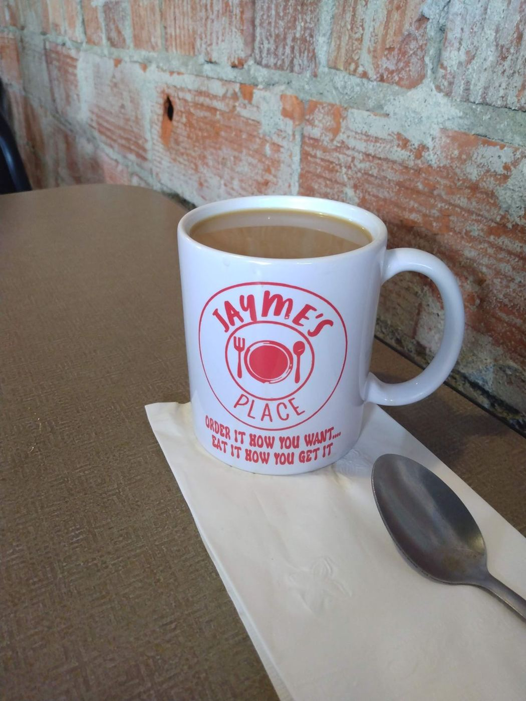

4.7★ diner
“Excellent service and food! Very busy but very attentive staff. Will return when in area for sure!”
“Fast friendly service. Hot food. I had the cinnamon roll pancake and scrambled eggs and my son had french toast, fried eggs and bacon. Both were delicious. Locally sourced maple syrup YUM!! Our waitress was Liz. Great experience and we'll be back to try lunch also!!”
“Didn’t disappoint! Breakfast selections are pretty standard here. Great little unknown restaurant in the middle of downtown Upper Sandusky. Server was friendly & kept the coffee cup filled. Pricing is reasonable for the quality & quantity of food. Bacon is extra thick, just how…”
“Wonderful place! Excellent service- so glad we took a chance and stopped in! Food was beyond excellent and good prices.”
“First time coming here. We are from Texas and come to Ohio frequently. The food was amazing. Their sausage gravy was the best I have ever had. Eggs were cooked to perfection and asked for some onions in my extra crispy hash browns and they were perfect. Can’t wait to stop by…”
“Friendly staff. Quick service. Good Food. Will definitely be back.”
“Check Google Maps or Facebook for current hours. Formerly Granny’s Kitchen Beginning in October they will be open on Mondays!! Great menu choices! Wraps are loaded and big! Fresh cut fries! Sweet potato fries! Breakfast is the best in town! Best burger as well! Homemade desserts…”
“Our waitress was as friendly as before with the old owners! I had the blueberry pancakes short stack. No butter just syrup on the top pancake with the blueberry is all the flavor necessary. The menu looks better than ever! My wife and brother ordered burgers and they looked…”